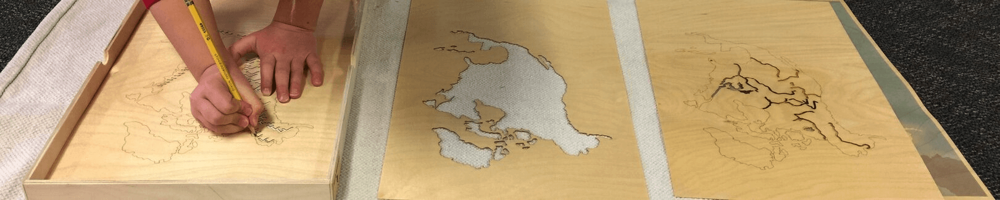

Career Experience
Regional Manager
Community Montessori Charter School, Escondido, CA
2015-present
- Employee recruitment, hiring, evaluation
- Mentor and coach staff through observing instruction and performance reflections
- Assess effectiveness of facility and needs for relocation and/or expansion
- Conduct regional meetings
- Serve as a liaison between families and school leadership team
- Implement safety plan policies and procedures
- Lead SST and IEP meetings and work with Special Education personnel to see that all students are properly served
- Coordinate assessment and accountability programs within the region
- Organize parent workshops, tours, and informational meetings
- Coordinate service-learning projects within the region
Elementary Teacher
Community Montessori Charter School, Escondido, CA
2012-present
- Collaborates with parents and students to develop autonomy and purpose through personalized learning goals
- Developed Math curriculum that weaves Montessori Curriculum and CA Common Core Standards
- Creates kinesthetic and visual extension activities that expand engagement
- Produced comprehensive spelling program using phonics, spelling rules, and kinesthetic activities
- Maintains a learning environment that facilitates mastery through individual learning styles